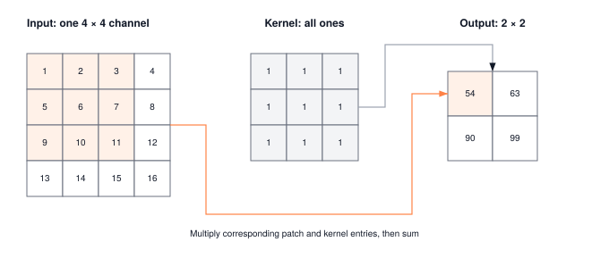

Module 09: Convolutions
A convolution is a tiled matmul with structured data reuse. That reuse is what lets vision kernels hit near-peak FLOPS on hardware that would stall at fully-connected equivalents. The inductive bias of shared weights is the pedagogical story. The memory access pattern is the systems story.
ARCHITECTURE TIER | Difficulty: ●●●○ | Time: 6-8 hours | Prerequisites: 01-08
Prerequisites — Modules 01-08. You should have:
- Built the complete training pipeline (Modules 01-08)
- Implemented DataLoader for batch processing (Module 05)
- Comfort with parameter initialization, forward/backward passes, and optimization
If you can train an MLP on MNIST using your training loop and DataLoader, you’re ready.
🎧 Audio Overview
Listen to an AI-generated overview.
Overview
You have just finished the foundations tier. You can train an MLP, run optimization, move batches through a working pipeline. Welcome to the Architecture Tier, where the question changes from can the network learn? to what should the network’s structure assume about the data?
Convolution is the answer for images. A photograph has structure that a generic MLP throws away: neighboring pixels matter together, the same edge can appear anywhere in the frame, and shifting a cat one pixel to the left should not require relearning what a cat looks like. A convolutional layer bakes those assumptions in — locality, weight sharing, and translation equivariance — and that structural prior is the reason CNNs dominated computer vision for a decade.
In this module you implement Conv2d, MaxPool2d, and AvgPool2d as explicit nested loops. No vectorization tricks, no GPU kernel calls. The loops are the point: they expose where every multiply-accumulate goes and why a single forward pass on a 224×224 batch costs billions of operations. Once you have felt that cost in code, the optimizations real frameworks pile on top — im2col, Winograd, cuDNN — stop feeling like magic.
Learning Objectives
- Implement Conv2d with explicit 7-nested loops revealing O(B×C×H×W×K²×C_in) computational complexity
- Master spatial dimension calculations with stride, padding, and kernel size interactions
- Understand receptive fields, parameter sharing, and translation equivariance in CNNs
- Analyze memory vs computation trade-offs: pooling reduces spatial dimensions 4x while preserving features
- Connect your implementations to production CNN architectures like ResNet and VGG
What You’ll Build

Implementation roadmap:
Table 1 lays out the implementation in order, one part at a time.
| Part | What You’ll Implement | Key Concept |
|---|---|---|
| 1 | Conv2d.__init__() |
He initialization for ReLU networks |
| 2 | Conv2d.forward() |
7-nested loops for spatial convolution |
| 3 | MaxPool2d.forward() |
Maximum selection in sliding windows |
| 4 | AvgPool2d.forward() |
Average pooling for smooth features |
The pattern you’ll enable:
# Building a CNN block
conv = Conv2d(3, 64, kernel_size=3, padding=1)
pool = MaxPool2d(kernel_size=2, stride=2)
x = Tensor(image_batch) # (32, 3, 224, 224)
features = pool(ReLU()(conv(x))) # (32, 64, 112, 112)What You’re NOT Building (Yet)
To keep this module focused, you will not implement:
- Dilated convolutions (PyTorch supports this with
dilationparameter) - Grouped convolutions (that’s for efficient architectures like MobileNet)
- Depthwise separable convolutions (advanced optimization technique)
- Transposed convolutions for upsampling (used in GANs and segmentation)
- Optimized implementations (cuDNN uses Winograd algorithm and FFT convolution)
You are building the foundational spatial operations. Advanced convolution variants and GPU optimizations come later.
API Reference
This section provides a quick reference for the spatial operations you’ll build. Use it as your guide while implementing and debugging convolution and pooling layers.
Conv2d Constructor
Conv2d(in_channels, out_channels, kernel_size, stride=1, padding=0, bias=True)Creates a 2D convolutional layer with learnable filters.
Parameters:
in_channels: Number of input channels (e.g., 3 for RGB)out_channels: Number of output feature mapskernel_size: Size of convolution kernel (int or tuple)stride: Stride of convolution (default: 1)padding: Zero-padding added to input (default: 0)bias: Whether to add learnable bias (default: True)
Weight shape: (out_channels, in_channels, kernel_h, kernel_w)
MaxPool2d Constructor
MaxPool2d(kernel_size, stride=None, padding=0)Creates a max pooling layer for spatial dimension reduction.
Parameters:
kernel_size: Size of pooling window (int or tuple)stride: Stride of pooling (default: same as kernel_size)padding: Zero-padding added to input (default: 0)
AvgPool2d Constructor
AvgPool2d(kernel_size, stride=None, padding=0)Creates an average pooling layer for smooth spatial reduction.
Parameters:
kernel_size: Size of pooling window (int or tuple)stride: Stride of pooling (default: same as kernel_size)padding: Zero-padding added to input (default: 0)
BatchNorm2d Constructor
BatchNorm2d(num_features, eps=1e-5, momentum=0.1)Batch normalization for 2D inputs (4D tensor: batch, channels, height, width). Normalizes each channel across the batch to stabilize training.
Parameters:
num_features: Number of channels (must match input channel dimension)eps: Small constant for numerical stability (default: 1e-5)momentum: Running mean/variance update rate (default: 0.1)
Core Methods
Table 2 lists the core methods on the spatial layers.
| Method | Signature | Description |
|---|---|---|
forward |
forward(x: Tensor) -> Tensor |
Apply spatial operation to input |
parameters |
parameters() -> list |
Return trainable parameters (Conv2d, BatchNorm2d) |
__call__ |
__call__(x: Tensor) -> Tensor |
Enable layer(x) syntax |
Output Shape Calculation
For both convolution and pooling:
output_height = (input_height + 2×padding - kernel_height) ÷ stride + 1
output_width = (input_width + 2×padding - kernel_width) ÷ stride + 1Core Concepts
This section covers the fundamental ideas you need to understand spatial operations deeply. These concepts apply to every computer vision system, from simple image classifiers to advanced object detectors.
Convolution Operation
Convolution detects local patterns by sliding a small filter (kernel) across the entire input, computing weighted sums at each position. Think of it as using a template to find matching patterns everywhere in an image.
Here’s how your implementation performs this operation:
The code in ?@lst-09-convolutions-conv2d-forward makes this concrete.
def forward(self, x):
# Calculate output dimensions
out_height = (in_height + 2 * self.padding - kernel_h) // self.stride + 1
out_width = (in_width + 2 * self.padding - kernel_w) // self.stride + 1
# Initialize output
output = np.zeros((batch_size, out_channels, out_height, out_width))
# Explicit 7-nested loop convolution
for b in range(batch_size):
for out_ch in range(out_channels):
for out_h in range(out_height):
for out_w in range(out_width):
in_h_start = out_h * self.stride
in_w_start = out_w * self.stride
conv_sum = 0.0
for k_h in range(kernel_h):
for k_w in range(kernel_w):
for in_ch in range(in_channels):
input_val = padded_input[b, in_ch,
in_h_start + k_h,
in_w_start + k_w]
weight_val = self.weight.data[out_ch, in_ch, k_h, k_w]
conv_sum += input_val * weight_val
output[b, out_ch, out_h, out_w] = conv_sum: Listing 9.1 — Conv2d.forward() written as seven explicit nested loops, exposing the O(B * C_out * H * W * C_in * K^2) cost that im2col and GEMM later optimise away. {#lst-09-convolutions-conv2d-forward}
Each output pixel summarizes information from a local neighborhood in the input. A 3×3 convolution looks at 9 pixels to produce each output value, enabling the network to detect local patterns like edges, corners, and textures.
Stride and Padding
Stride controls how far the kernel moves between positions, and padding adds zeros around the input border. Together, they determine the output spatial dimensions and receptive field coverage.
Stride = 1 means the kernel moves one pixel at a time, producing an output nearly as large as the input. Stride = 2 means the kernel jumps two pixels, halving the spatial dimensions and dramatically reducing computation. A stride-2 convolution processes 4× fewer positions than stride-1.
Padding solves the border problem. Without padding, a 3×3 convolution on a 224×224 image produces a 222×222 output, shrinking the representation. With padding=1, you add a 1-pixel border of zeros, keeping the output at 224×224. This preserves spatial dimensions and ensures edge pixels get processed as many times as center pixels.
No Padding (shrinks): Padding=1 (preserves):
Input: 5×5 Input: 5×5 → Padded: 7×7
Kernel: 3×3 Kernel: 3×3
Output: 3×3 Output: 5×5
┌─────────┐ ┌───────────┐
│ 1 2 3 4 5│ │0 0 0 0 0 0 0│
│ 6 7 8 9 0│ 3×3 kernel │0 1 2 3 4 5 0│
│ 1 2 3 4 5│ → │0 6 7 8 9 0 0│
│ 6 7 8 9 0│ 3×3 output │0 1 2 3 4 5 0│
│ 1 2 3 4 5│ │0 6 7 8 9 0 0│
└─────────┘ │0 1 2 3 4 5 0│
│0 0 0 0 0 0 0│
└───────────┘
5×5 output preservedThe formula connecting these parameters is:
output_size = (input_size + 2×padding - kernel_size) / stride + 1For a 224×224 input with kernel=3, padding=1, stride=1:
output_size = (224 + 2×1 - 3) / 1 + 1 = 224
For the same input with stride=2:
output_size = (224 + 2×1 - 3) / 2 + 1 = 112
Receptive Fields
The receptive field of an output neuron is the region of the original input that can influence its value. A single 3×3 convolution gives every output pixel a 3×3 receptive field. Stack two 3×3 convolutions and each output now depends on a 5×5 region of the original input. Five stacked 3×3 convolutions reach 11×11.
That growth is why depth matters. Early layers see only enough pixels to detect edges and textures. Middle layers see enough to assemble parts — eyes, wheels, corners. Deep layers see enough of the input to recognize whole objects. The hierarchy in the network mirrors the hierarchy in the data: pixels → textures → parts → objects.
Receptive Field Growth:
Layer 1 (3×3 conv): Layer 2 (3×3 conv): Layer 3 (3×3 conv):
┌───┐ ┌─────┐ ┌───────┐
│▓▓▓│ → 3×3 RF │▓▓▓▓▓│ → 5×5 RF │▓▓▓▓▓▓▓│ → 7×7 RF
└───┘ └─────┘ └───────┘
Stacking N 3×3 convolutions:
Receptive Field = 1 + 2×N
VGG-16 uses this principle: stack many small kernels instead of few large ones.Parameter sharing means the same 3×3 kernel processes every position in the image. This drastically reduces parameters compared to fully connected layers while maintaining translation equivariance: if you shift the input, the output shifts identically.
Pooling Operations
Pooling reduces spatial dimensions while preserving important features. Max pooling selects the strongest activation in each window, preserving sharp features like edges. Average pooling computes the mean, creating smoother, more general features.
Here’s how max pooling works in your implementation:
The code in ?@lst-09-convolutions-maxpool2d-forward makes this concrete.
def forward(self, x):
# Calculate output dimensions
out_height = (in_height + 2 * self.padding - kernel_h) // self.stride + 1
out_width = (in_width + 2 * self.padding - kernel_w) // self.stride + 1
output = np.zeros((batch_size, channels, out_height, out_width))
# Explicit nested loop max pooling
for b in range(batch_size):
for c in range(channels):
for out_h in range(out_height):
for out_w in range(out_width):
in_h_start = out_h * self.stride
in_w_start = out_w * self.stride
# Find maximum in window
max_val = -np.inf
for k_h in range(kernel_h):
for k_w in range(kernel_w):
input_val = padded_input[b, c,
in_h_start + k_h,
in_w_start + k_w]
max_val = max(max_val, input_val)
output[b, c, out_h, out_w] = max_val: Listing 9.2 — MaxPool2d.forward() selects the largest value in each sliding window, no learnable parameters — just comparisons. {#lst-09-convolutions-maxpool2d-forward}
A 2×2 max pooling with stride=2 divides spatial dimensions by 2, reducing memory and computation by 4×. For a 224×224×64 feature map (12.3 MB in float32), pooling produces 112×112×64 (3.1 MB), saving 9.2 MB per layer.
Max pooling provides translation invariance: if a cat’s ear moves one pixel, the max in that region remains roughly the same, making the network robust to small shifts. This is crucial for object recognition where precise pixel alignment doesn’t matter.
Average pooling smooths features by averaging windows, useful for global feature summarization. Modern architectures often use global average pooling (averaging entire feature maps to single values) instead of fully connected layers, dramatically reducing parameters.
Output Shape Calculation
Understanding output shapes is critical for building CNNs. A shape mismatch crashes your network, while correct dimensions ensure features flow properly through layers.
The output shape formula applies to both convolution and pooling:
H_out = ⌊(H_in + 2×padding - kernel_h) / stride⌋ + 1
W_out = ⌊(W_in + 2×padding - kernel_w) / stride⌋ + 1The floor operation (⌊⌋) ensures integer dimensions. If the calculation doesn’t divide evenly, the rightmost and bottommost regions get ignored.
Example calculations:
Input: (32, 3, 224, 224) [batch=32, RGB channels, 224×224 image]
Conv2d(3, 64, kernel_size=3, padding=1, stride=1): H_out = (224 + 2×1 - 3) / 1 + 1 = 224 W_out = (224 + 2×1 - 3) / 1 + 1 = 224 Output: (32, 64, 224, 224)
MaxPool2d(kernel_size=2, stride=2): H_out = (224 + 0 - 2) / 2 + 1 = 112 W_out = (224 + 0 - 2) / 2 + 1 = 112 Output: (32, 64, 112, 112)
Conv2d(64, 128, kernel_size=3, padding=0, stride=2): H_out = (112 + 0 - 3) / 2 + 1 = 55 W_out = (112 + 0 - 3) / 2 + 1 = 55 Output: (32, 128, 55, 55)
Common patterns: - Same convolution (padding=1, stride=1, kernel=3): Preserves spatial dimensions - Stride-2 convolution: Halves dimensions, replaces pooling in some architectures (ResNet) - 2×2 pooling, stride=2: Classic dimension reduction, halves H and W
Computational Complexity
Convolution is expensive. The explicit loops reveal exactly why: you’re visiting every position in the output, and for each position, sliding over the entire kernel across all input channels.
For a single Conv2d forward pass:
Operations = B × C_out × H_out × W_out × C_in × K_h × K_wExample: Batch=32, Input=(3, 224, 224), Conv2d(3→64, kernel=3, padding=1, stride=1)
Operations = 32 × 64 × 224 × 224 × 3 × 3 × 3 = 32 × 64 × {python} complexity_hw × {python} complexity_kernel = {python} complexity_ops multiply-accumulate operations ≈ {python} complexity_approx billion operations per forward pass!
Executing billions of scattered operations sequentially via deeply nested for loops yields catastrophic cache-miss rates because it fails to leverage temporal locality (reusing recently accessed data) and spatial locality (accessing contiguous memory blocks). This forces engineers to radically restructure how convolutions map to massively parallel hardware.
Modern GPUs physically cannot execute branching, nested for loops efficiently; however, they possess thousands of highly specialized cores explicitly optimized for dense General Matrix Multiplication (GEMM) via hardware cache tiling. To bridge this architectural gap, frameworks employ im2col (Image to Column). This algorithm systematically duplicates the spatial image memory in VRAM, unrolling the overlapping sliding windows into one massive, contiguous 2D matrix. By deliberately sacrificing raw memory capacity, im2col artificially creates perfect spatial locality for the GEMM hardware. This structural reorganization ensures that cache tiling can maximally exploit temporal locality, transforming a disjointed spatial traversal into a monolithic matrix multiplication and achieving a 100× throughput acceleration.
While im2col elegantly bypasses the compute bottleneck, it aggressively transfers that pressure directly onto VRAM capacity. This harsh tension between tensor memory duplication and computational vectorization underscores why spatial kernel size is aggressively optimized. Because a 7×7 kernel imposes {python} kernel_ratio× more compute and spatial redundancy than a 3×3 kernel, modern architectures (like VGG and ResNet) strictly favor stacking deep sequences of 3×3 convolutions rather than deploying monolithic, large-footprint kernels.
Pooling operations are cheap by comparison: no learnable parameters, just comparison or addition operations. A 2×2 max pooling visits each output position once and compares 4 values, requiring only 4× comparisons per output.
Table 3 summarises the time and memory cost of the core operations.
| Operation | Complexity | Notes |
|---|---|---|
| Conv2d (K×K) | O(B×C_out×H×W×C_in×K²) | Cubic in spatial dims, quadratic in kernel |
| MaxPool2d (K×K) | O(B×C×H×W×K²) | No channel mixing, just spatial reduction |
| AvgPool2d (K×K) | O(B×C×H×W×K²) | Same as MaxPool but with addition |
Memory consumption follows the output shape. A (32, 64, 224, 224) float32 tensor requires:
32 × 64 × 224 × 224 × 4 bytes = 392 MB
That single tensor is your batch’s activations after one layer. Doubling batch size doubles that memory. GPUs have limited memory (typically 8-24 GB), which is what ultimately caps batch size and feature-map resolution in practice.
Common Errors
These are the errors you’ll encounter most often when working with spatial operations. Understanding why they happen will save you hours of debugging CNNs.
Shape Mismatch in Conv2d
Error: ValueError: Expected 4D input (batch, channels, height, width), got (3, 224, 224)
Conv2d requires 4D input: (batch, channels, height, width). If you forget the batch dimension, the layer interprets channels as batch, height as channels, causing chaos.
Fix: Add batch dimension: x = x.reshape(1, 3, 224, 224) or ensure your data pipeline always includes batch dimension.
Dimension Calculation Errors
Error: Output shape is 55 when you expected 56
The floor operation in output dimension calculation can surprise you. If (input + 2×padding - kernel) / stride doesn’t divide evenly, the result gets floored.
Example:
Input: 224×224, kernel=3, padding=0, stride=2 output_size = (224 + 0 - 3) // 2 + 1 = 221 // 2 + 1 = 110 + 1 = 111
Fix: Use calculators or test with dummy data to verify dimensions before building full architecture.
Padding Value Confusion
Error: Max pooling produces zeros at borders when using padding > 0
If you pad max pooling input with zeros (constant_values=0), and your feature map has negative values, the padded zeros will be selected as maximums at borders, creating artifacts.
Fix: Pad max pooling with -np.inf:
padded_input = np.pad(x.data, ..., constant_values=-np.inf)Stride/Kernel Mismatch in Pooling
Error: Overlapping pooling windows when stride ≠ kernel_size
By convention, pooling uses non-overlapping windows: stride = kernel_size. If you accidentally set stride=1 with kernel=2, windows overlap, creating redundant computation and unexpected behavior.
Fix: Ensure stride = kernel_size for pooling, or set stride=None to use default (equals kernel_size).
Memory Overflow
Error: RuntimeError: CUDA out of memory or system hangs
Large feature maps consume enormous memory. A batch of 64 images at 224×224×64 channels uses 0.8 GB for a single layer’s output. Stack fifty layers and the activations alone — needed for backprop — outgrow most GPUs.
Fix: Reduce batch size, use smaller images, or add more pooling layers to reduce spatial dimensions faster.
Production Context
Your Implementation vs. PyTorch
Your TinyTorch spatial operations and PyTorch’s torch.nn.Conv2d share the same conceptual foundation: sliding kernels, stride, padding, output shape formulas. The differences lie in optimization and hardware support.
Table 4 places your implementation side by side with the production reference for direct comparison.
| Feature | Your Implementation | PyTorch |
|---|---|---|
| Backend | NumPy loops (Python) | cuDNN (CUDA C++) |
| Speed | 1x (baseline) | 100-1000x faster on GPU |
| Optimization | Explicit loops | im2col + GEMM, Winograd, FFT |
| Memory | Straightforward allocation | Memory pooling, gradient checkpointing |
| Features | Basic conv + pool | Dilated, grouped, transposed, 3D convolutions |
Code Comparison
The following comparison shows equivalent operations in TinyTorch and PyTorch. Notice how the API mirrors perfectly, making your knowledge transfer directly to production frameworks.
from tinytorch.core.spatial import Conv2d, MaxPool2d, AvgPool2d
from tinytorch.core.activations import ReLU
# Build a CNN block
conv1 = Conv2d(3, 64, kernel_size=3, padding=1)
conv2 = Conv2d(64, 128, kernel_size=3, padding=1)
pool = MaxPool2d(kernel_size=2, stride=2) # Or use AvgPool2d for smooth features
relu = ReLU()
# Forward pass
x = Tensor(image_batch) # (32, 3, 224, 224)
x = relu(conv1(x)) # (32, 64, 224, 224)
x = pool(x) # (32, 64, 112, 112)
x = relu(conv2(x)) # (32, 128, 112, 112)
x = pool(x) # (32, 128, 56, 56)import torch
import torch.nn as nn
# Build a CNN block
conv1 = nn.Conv2d(3, 64, kernel_size=3, padding=1)
conv2 = nn.Conv2d(64, 128, kernel_size=3, padding=1)
pool = nn.MaxPool2d(kernel_size=2, stride=2)
relu = nn.ReLU()
# Forward pass (identical structure!)
x = torch.tensor(image_batch, dtype=torch.float32)
x = relu(conv1(x))
x = pool(x)
x = relu(conv2(x))
x = pool(x)Let’s walk through each line to understand the comparison:
- Lines 1-2 (Imports): TinyTorch separates spatial operations and activations into different modules; PyTorch consolidates into
torch.nn. Same concepts, different organization. - Lines 4-7 (Layer creation): Identical API. Both use
Conv2d(in, out, kernel_size, padding)andMaxPool2d(kernel_size, stride). The parameter names and semantics are identical. - Line 10 (Input): TinyTorch wraps in
Tensor; PyTorch usestorch.tensor()with explicit dtype. Same abstraction. - Lines 11-14 (Forward pass): Identical call patterns. ReLU activations, pooling for dimension reduction, growing channels (3→64→128). This is the standard CNN building block.
- Shapes: Every intermediate shape matches between frameworks because the formulas are identical.
Convolution mathematics, stride and padding formulas, receptive field growth, and parameter sharing. The APIs are intentionally identical so your understanding transfers directly to production systems.
Why Spatial Operations Matter at Scale
The scale of production vision systems is what makes convolution optimization a first-class engineering concern:
- ResNet-50 — 25 million parameters, 4 billion operations per image, thousands of images per second in serving
- YOLO object detection — 30 FPS video at 1080p, ~60 billion convolution operations per second
- Self-driving cars — 10+ CNN models running simultaneously across 6 cameras at 30 FPS, ~300 billion operations per second inside a 50ms latency budget
Your educational Conv2d takes hundreds of milliseconds on CPU for a single forward pass. The equivalent PyTorch call runs in single-digit milliseconds on GPU, and the gap is bridged by three ideas you should know by name:
- im2col + GEMM — reshape the convolution into a matrix multiply and hand it to a tuned BLAS kernel
- Winograd — algebraic identity that cuts the multiplication count for 3×3 kernels by ~2.25×
- FFT convolution — for large kernels, Fourier-domain multiplication trades O(n²) for O(n log n)
Module 17 is where you replace your loops with the first of these. Before you can optimize convolution, you have to feel why it is slow — which is exactly what the loops you wrote in this module make undeniable.
Check Your Understanding
Before moving on, verify you can articulate each of the following:
If any of these feels fuzzy, revisit the Computational Complexity and Receptive Fields sections before moving on.
Use these questions to test the systems intuition — output shapes, parameters, and computational cost — that you’ll need every time you reach for a real CNN architecture.
Q1: Output Shape Calculation
Given input (32, 3, 128, 128), what’s the output shape after Conv2d(3, 64, kernel_size=5, padding=2, stride=2)?
Calculate height and width:
H_out = (128 + 2×2 - 5) / 2 + 1 = (128 + 4 - 5) / 2 + 1 = 127 / 2 + 1 = 63 + 1 = 64 W_out = (128 + 2×2 - 5) / 2 + 1 = 64
Output shape: (32, 64, 64, 64)
Batch stays the same, channels jump 3→64, and spatial dimensions halve because stride=2.
Q2: Parameter Counting
How many parameters in Conv2d(3, 64, kernel_size=3, bias=True)?
Weight parameters: out_channels × in_channels × kernel_h × kernel_w
Weight: 64 × 3 × 3 × 3 = 1,728 parameters Bias: 64 parameters Total: 1,792 parameters
Compare this to a fully connected layer for 224×224 RGB images:
Dense(224×224×3, 64) = 150,528 × 64 = 9,633,792 parameters.
Convolution uses 5,376× fewer parameters for the same task — that is the price of weight sharing, and it is the structural advantage that makes deep CNNs trainable on commodity hardware.
Q3: Computational Complexity
For input (16, 64, 56, 56) and Conv2d(64, 128, kernel_size=3, padding=1, stride=1), how many multiply-accumulate operations?
Operations = B × C_out × H_out × W_out × C_in × K_h × K_w
First calculate output dimensions:
H_out = (56 + 2×1 - 3) / 1 + 1 = 56 W_out = (56 + 2×1 - 3) / 1 + 1 = 56
Then total operations:
16 × 128 × 56 × 56 × 64 × 3 × 3 = 16 × 128 × 3,136 × 576 = 3,699,376,128 operations ≈ 3.7 billion operations per forward pass.
This is why batch size directly impacts training time: doubling the batch doubles the operations.
Q4: Memory Calculation
What’s the memory requirement for storing the output of Conv2d(3, 256, kernel_size=7, stride=2, padding=3) on input (64, 3, 224, 224)?
First calculate output dimensions:
H_out = (224 + 2×3 - 7) / 2 + 1 = (224 + 6 - 7) / 2 + 1 = 223 / 2 + 1 = 111 + 1 = 112 W_out = 112
Output shape: (64, 256, 112, 112)
Memory (float32 = 4 bytes):
64 × 256 × 112 × 112 × 4 = 822,083,584 bytes ≈ 784 MB for a single layer’s output.
Deep CNNs need GPUs with large memory (16 GB and up) for exactly this reason. Backprop must keep every layer’s activations resident, and fifty layers of this size will not fit anywhere else.
Q5: Receptive Field Growth
Starting with 224×224 input, you stack: Conv(3×3, stride=1) → MaxPool(2×2, stride=2) → Conv(3×3, stride=1) → Conv(3×3, stride=1). What’s the receptive field of the final layer?
Track receptive field growth through each layer:
Layer 1 — Conv(3×3, stride=1): RF = 3 Layer 2 — MaxPool(2×2, stride=2): RF = 3 + (2−1)×1 = 4 Layer 3 — Conv(3×3, stride=1): RF = 4 + (3−1)×2 = 8 (stride accumulates) Layer 4 — Conv(3×3, stride=1): RF = 8 + (3−1)×2 = 12
Receptive field = 12×12
Each neuron in the final layer sees a 12×12 region of the original input. This is why stacking layers with stride or pooling matters: it grows the receptive field so deeper layers can detect larger patterns.
Formula: RF_new = RF_old + (kernel_size - 1) × stride_product
where stride_product is the accumulated stride from all previous layers.
Key Takeaways
- Convolution is a structural prior, not just an operation: Locality, weight sharing, and translation equivariance are baked in — those priors are the reason CNNs beat MLPs on images with orders of magnitude fewer parameters.
- The 7-nested loop exposes the cost:
O(B × C_out × H × W × C_in × K²)is cubic in spatial dimensions and quadratic in kernel size, which is why a single ResNet-50 forward pass on one image is ~4 billion MACs. - im2col trades VRAM for throughput: Unrolling sliding windows into one dense matrix hands the work to GPU GEMM kernels that exploit cache tiling. The duplicated memory is the tax you pay for ~100× acceleration.
- Output shape, parameter count, and receptive field are the three CNN formulas you live by:
(H + 2p - K)/s + 1,C_out × C_in × K², andRF_new = RF_old + (K-1) × stride_product. Every architectural decision traces back to these. - Activation memory, not parameter memory, caps batch size: A single (64, 256, 112, 112) feature map is ~784 MB. Fifty such layers, times two for backward, is what forces gradient checkpointing in practice.
Coming next: Convolution is the structural prior for grids of pixels. Text has no grid — it is a discrete sequence with no fixed alphabet. Module 10 builds BPE and WordPiece tokenizers and introduces the first real design question of the language stack: vocabulary.
Further Reading
For students who want to understand the academic foundations and explore spatial operations further:
Seminal Papers
- Gradient-Based Learning Applied to Document Recognition - LeCun et al. (1998). The paper that launched convolutional neural networks, introducing LeNet-5 for handwritten digit recognition. Essential reading for understanding why convolution works for vision.
- Systems Implication: Weight sharing in convolutions drastically reduced the required parameter count compared to dense, fully connected layers. This architectural breakthrough made high-fidelity inference mathematically feasible on the severely constrained memory and cache architecture of 1990s-era CPUs. IEEE
- ImageNet Classification with Deep Convolutional Neural Networks - Krizhevsky et al. (2012). AlexNet, the breakthrough that demonstrated CNNs could conquer the massive ImageNet dataset, cementing ReLU, dropout, and data augmentation into the modern deep learning canon.
- Systems Implication: The parameter density of AlexNet exceeded the physical limits of a single GTX 580 GPU (3GB VRAM). The authors were forced to shard the layer weights and feature maps across two independent GPUs, unintentionally giving birth to the modern paradigm of Model Parallelism. NeurIPS
- Very Deep Convolutional Networks for Large-Scale Image Recognition - Simonyan & Zisserman (2014). VGG networks proved that relentlessly stacking many compact 3×3 convolutions yields vastly superior hierarchical features compared to using sparse, large kernels.
- Systems Implication: While VGG’s uniform architecture simplified GPU kernel scheduling, its decision to maintain high-resolution, multi-channel feature maps deep into the network created a catastrophic memory footprint, severely constraining batch sizes and dictating the need for more efficient downstream architectures. arXiv:1409.1556
- Deep Residual Learning for Image Recognition - He et al. (2015). ResNet introduced residual skip connections, enabling the stable training of ultra-deep, 100+ layer networks and entirely conquering the vanishing gradient problem.
- Systems Implication: Residual skip connections structurally necessitated keeping early-layer spatial activations alive in VRAM long after their immediate computation finished. This elongated tensor lifecycle fundamentally complicated GPU memory allocator design and severely worsened Activation Pinning during the forward pass. arXiv:1512.03385
Additional Resources
- CS231n: Convolutional Neural Networks for Visual Recognition - Stanford course notes with excellent visualizations of convolution, receptive fields, and feature maps: https://cs231n.github.io/convolutional-networks/
- Textbook: “Deep Learning” by Goodfellow, Bengio, and Courville - Chapter 9 covers convolutional networks with mathematical depth
- Distill.pub: “Feature Visualization” - Interactive article showing what CNN filters learn at different depths: https://distill.pub/2017/feature-visualization/
What’s Next
Convolution is the structural prior for grids of pixels. The next data type — text — is not a grid. It is a discrete sequence with no fixed alphabet, no fixed length, and no notion of intensity. Before any model can read English you have to answer a more basic question: how do you turn a string into numbers a network can multiply against? In Module 10 you implement BPE and WordPiece tokenizers and meet the first real architectural decision of the language stack: vocabulary.
How your spatial operations carry forward:
Table 5 traces how this module is reused by later parts of the curriculum.
| Module | What it does | Your spatial ops in action |
|---|---|---|
| Milestone 3: CNN | Complete CNN for CIFAR-10 | Stack your Conv2d and MaxPool2d for image classification |
| Module 17: Acceleration | Optimize convolution | Replace loops with im2col and vectorized GEMM |
| Vision Projects | Object detection, segmentation | Your spatial foundations scale to advanced architectures |
Get Started
- Launch Binder - Run interactively in browser, no setup required
- View Source - Browse the implementation code
Binder sessions are temporary. Download your completed notebook when done, or clone the repository for persistent local work.